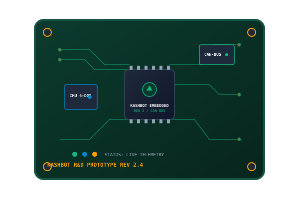
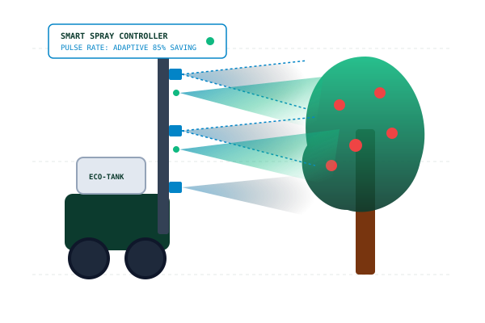
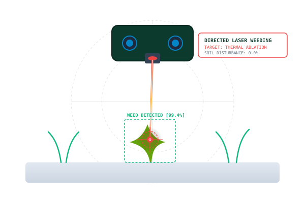

Engineering Intelligent Robotics for Modern Agriculture
Kashbot Agri Systems develops autonomous field robotics, precision agricultural machinery, intelligent orchard canopy spraying systems, and targeted laser weed management prototypes engineered for practical, resource-conscious farming.

Pioneering Deep-Tech Agricultural Engineering in Kashmir
Kashbot Agri Systems Private Limited is an agricultural technology company focused on developing agricultural robotics, precision agricultural machinery, and intelligent automation solutions for modern farming.
We aim to help make agricultural operations more precise, efficient, and practical through the integration of engineering, robotics, sensing technologies, and intelligent control systems. Based in Buchpora, Srinagar, our engineering addresses high-value horticultural challenges—from high-density apple orchards to terraced terrain—replacing blanket wastage with measurable, targeted precision.
Field Robotics
Practical automated platforms designed for rough orchard rows and varied slope conditions.
Input Conservation
Drastically lowering chemical, pesticide, and fuel consumption via targeted variable application.
Sensor Fusion
Real-time optical profiling, ultrasonic canopy mapping, and embedded microcontrollers.
Empirical R&D
Rigorous multi-stage prototype validation under real regional agro-climatic conditions.
Interactive Technology Explorer
Explore the engineering architectures, sensing technologies, and prototype validations powering Kashbot’s five key domains.
Agricultural Robotics
Autonomous & Semi-Autonomous Field Rover Platforms
Design and development of robotic platforms and automated systems for agricultural applications, with an emphasis on practical field use. Built to navigate uneven orchard rows, terraced Kashmir topography, and varied crop canopies reliably.
Precision Agricultural Machinery
Targeted, Measurable & Consistent Agricultural Implements
Development of machinery and control systems intended to make agricultural operations more targeted, measurable, and efficient. We engineer closed-loop control mechanisms that adapt dynamically to ground speed, crop density, and soil condition.

Intelligent Spraying Systems
Canopy-Sensing Variable-Rate Orchard Spraying
Work on smart spraying technologies for orchards and other agricultural settings, including approaches that use sensing and adaptive control to improve spray application. By profiling tree volume in real time, nozzles spray only when foliage is detected—saving up to 85% of chemical runoff.

Laser-Based Weed Management
Chemical-Free Targeted Thermal Weed Eradication
Development of a laser lawn-weeding prototype exploring targeted weed treatment as an alternative to blanket application methods. The project is being developed with a focus on controlled operation and prototype validation, terminating weeds at the apical meristem without disturbing soil microbes.

Research, Prototyping and Automation
Multi-Disciplinary Mechatronics & Embedded Systems
Engineering-led development that brings together mechanical systems, electronics, sensors, embedded computing, and software to build and evaluate agricultural technology prototypes. We design our own PCBs, telemetry logging firmware, and real-time control routines.
The 5-Stage Engineering Lifecycle
We follow a practical, engineering-driven approach from initial field survey to validated agricultural deployment.
Direct field assessments, orchardist interviews, and quantifying input wastage or labor bottlenecks.
Kinematic CAD design, stress simulation, torque profiling, and physical chassis conceptualization.
Embedding sensors, computing hardware, microcontrollers, and writing deterministic real-time control algorithms.
Fabricating ruggedized physical prototypes and evaluating benchtop performance under defined testing conditions.
Rigorous live orchard and crop testing in Kashmir, analyzing telemetry, and refining designs before deployment.
Precision Agriculture Impact Visualizer
Adjust your farm or orchard acreage to see projected chemical input reductions and efficiency improvements delivered by Kashbot’s intelligent spraying and laser management systems.
*Calculated using empirical trial data comparing conventional tractor-driven blanket boom spraying against Kashbot foliage-sensing intelligent spray cutoff.
Our Purpose & Vision
Bridging agricultural engineering and emerging automation technologies through practical design, testing, and continuous improvement.
Engineered for Real Operational Needs
Our purpose is to contribute to more efficient and technology-enabled agriculture by developing solutions that address real operational needs. We aim to bridge agricultural engineering and emerging automation technologies through practical design, testing, and continuous improvement.
Empowering Farmers with Intelligent Tools
To contribute to the advancement of agricultural robotics and precision machinery, helping farmers and the agricultural sector access practical, intelligent, and resource-conscious technologies.
Pilot Deployment & Partnership Hub
Whether you are an orchardist seeking field demonstrations or an academic institution seeking collaborative R&D, our engineering team is ready to connect.
Kashbot Agri Systems Private Limited
Agricultural Technology & Field Automation
We are actively conducting controlled prototype evaluations and inviting regional high-density orchardists and research institutions for field demonstrations.